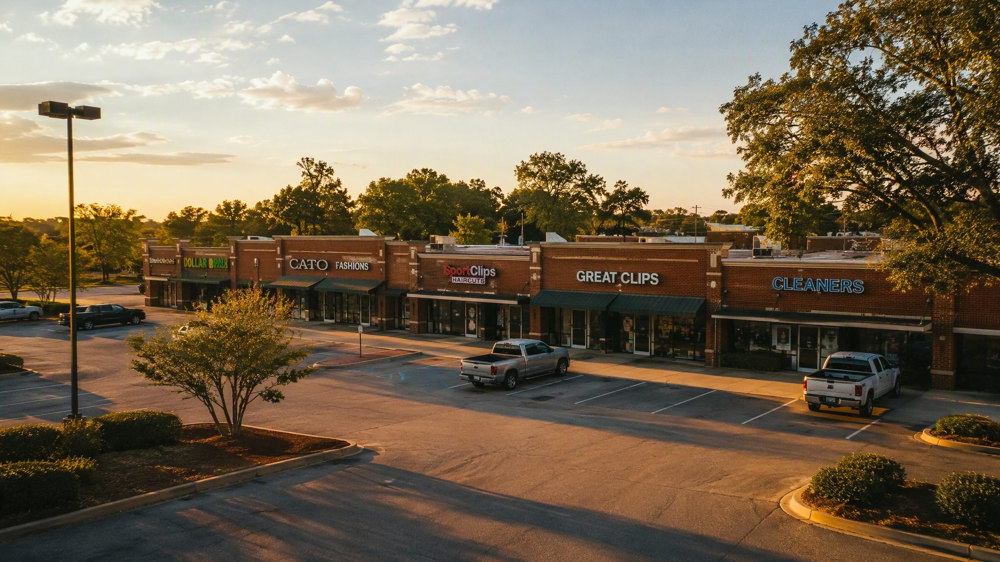

Make the work easier to run.
Thirty-eight articles on owning, acquiring, financing, leasing, operating, and selling retail shopping centers — from the operator's desk at On The Blvd in Lafayette, Louisiana, plus the AI operating systems and checklists that keep a center visible, dated, and owned.

Map the recurring workflows, decisions, handoffs, and owners — before changing anything.
Design the rhythm, records, and carefully bounded AI assistance that fit the property.
Put the system into use, clarify accountability, and improve it with the team.
Interactive articles
Workable, saveable toolsNo articles match that search. Try a broader term — or browse the index below.
Cypress Command
Cypress Command is an AI-enabled operating systems partner for owner-led businesses. Commercial real estate ownership and management is its proof domain: leases, vendors, tenants, finance, and the recurring work that keeps an asset running. This series is its field library — everything the practice has learned from operating a legacy center, written for owners and operators who do the work themselves.
Practical intelligence for real operations.